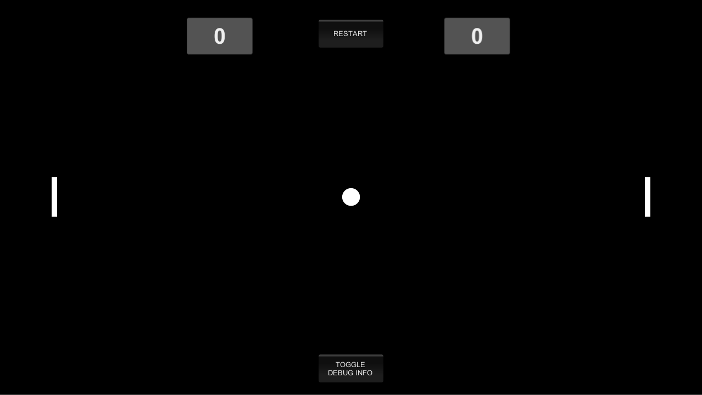

Selama beberapa waktu terakhir, saya menyempatkan waktu untuk mengulik proses pengembangan game.
Berikut adalah beberapa project prototype game yang pernah saya kerjakan:
Kendarace
Game 2D platformer dengan memadukan kendaraan sebagai player. Player dituntut untuk bisa mencapai lokasi tujuan secepat mungkin dan
juga harus dalam kondisi kendaraan yang baik tanpa kerusakan. Selain itu, ada rambu lalu lintas yang harus dipatuhi agar mendapatkan
skor yang tinggi.
Game ini dikembangkan menggunakan Unity dan bahasa Pemrograman C#.
Nin Nin Zombies
Nin Nin Zombies adalah mini game classic yang menggunakan konsep 2D Platformer. Player
harus meraih poin setinggi-tingginya selama ia tetap bertahan hidup dan memiliki kunai. Jangan sentuh zombie secara langsung
jika tidak ingin terinfeksi!
Game ini dikembangkan dengan menggunakan bahasa pemrograman C++ dan library SFML.
Blacky Bird
Mini-game 'tiruan' Flappy Bird yang sempat populer beberapa waktu yang lalu. Pemain hanya perlu mengontrol burung agar tidak jatuh, dan
menangkap koin sebanyak-banyaknya untuk pendapatkan poin.
Game ini dibuat dengan gDevelop dan tanpa bantuan bahasa
pemrograman (hanya menggunakan simple logic scripting).
SIGN EDU
Game bertema edukasi di bidang pendidikan Biologi. Game ini memberikan pengalaman bermain dan belajar biologi khususnya dalam
bab metabolisme yang umumnya dipelajari di sekolah menengah tingkat atas. Game ini bertujuan agar siswa SMA mendapatkan dorongan
untuk belajar biologi lebih tinggi dengan cara yang menyenangkan.
Game ini merupakan project kolaborasi antar mahasiswa dari prodi Pendidikan Biologi, Teknik Informatika, dan Informatika UNS.
Game ini dikembangkan menggunakan Unity dan bahasa Pemrograman C#.
Pong

Siapa yang tidak kenal Pong? Game yang satu ini sangatlah populer di zamannya, karena merupakan salah satu game
digital yang lahir di awal era digital. Cara bermainnya sangat mudah, pemain 1 hanya perlu memantulkan bola agar
tidak keluar batas area pemain.
Game ini merupakan hasil pengembangan tugas Dilo Academy - Game Programming Batch 2, yang dikembangkan
dengan bantuan Game Engine Unity serta bahasa pemrograman C#.